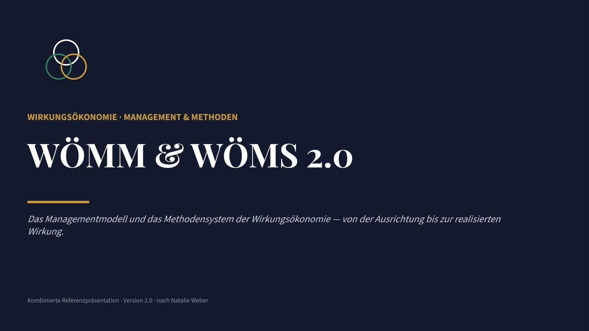

WÖMM & WÖMS · Referenzpräsentation
Zum Durchklicken
Managementmodell, Realisierungsarchitektur, Methodenlandschaft und Canvas-Prinzip - 15 Folien. Mit den Pfeiltasten ← → blättern, oder unten die Punkte.

 Wirkungsökonomie
Wirkungsökonomie
WÖMM & WÖMS · Referenzpräsentation
Managementmodell, Realisierungsarchitektur, Methodenlandschaft und Canvas-Prinzip - 15 Folien. Mit den Pfeiltasten ← → blättern, oder unten die Punkte.
